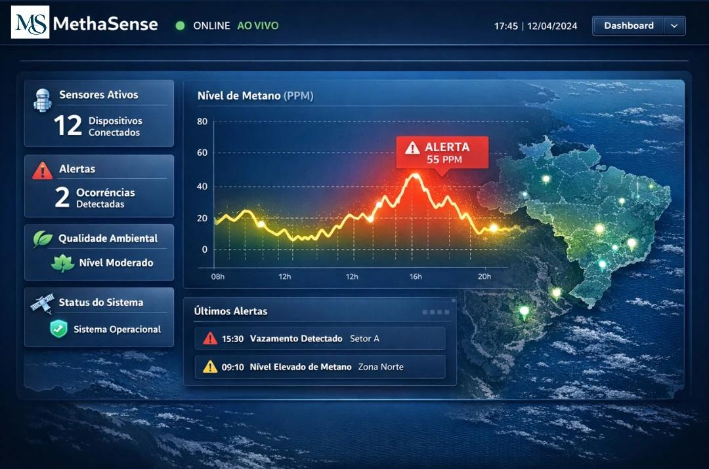

Nível Atual de Metano
MONITORAMENTO
42 PPM
Nível Moderado
Tecnologia Ambiental · Liga Jovem Sebrae 2026
Solução acessível para monitoramento de emissões de metano em tempo real — dados concretos para decisões ambientais mais rápidas e eficazes.
Monitoramento contínuo
Mais nocivo que CO₂ em 20 anos
Alertas inteligentes
O metano é responsável por cerca de 30% do aquecimento global desde a era pré-industrial. Vazamentos em pequenas propriedades rurais (biodigestores), cooperativas de reciclagem locais e lavouras passam despercebidos e causam danos irreversíveis ao clima — muitas vezes porque simplesmente não existem ferramentas de monitoramento acessíveis e eficazes no mercado.
do aquecimento global causado pelo metano
mais potente que o CO₂ no curto prazo
de metano emitidos por ano globalmente
das emissões têm origem humana e são evitáveis
Fontes: IPCC AR6 (2023) · Global Methane Tracker, IEA (2024)
Arquitetura modular com sensores físicos, transmissão de dados e análise inteligente em nuvem.
Sensores MQ-4 identificam concentrações de metano com capacidade de detecção contínua, operando em campo.
Dados enviados via protocolo MQTT para servidor em nuvem, permitindo atualização contínua das informações monitoradas.
Sistema identifica riscos ambientais e gera alertas em tempo real, permitindo respostas rápidas antes que o problema se agrave.
Desenvolvimento estruturado em etapas, priorizando pesquisa, acessibilidade e evolução gradual da plataforma.
Desenvolvimento da proposta, pesquisa sobre emissões de metano, validação do problema e construção da estrutura inicial da plataforma.
Desenvolvimento de uma interface intuitiva para transformar dados ambientais complexos em informações acessíveis e compreensíveis.
Integração com bases públicas e fontes externas de monitoramento ambiental para ampliação das análises e visualizações da plataforma.
Evolução das ferramentas da MethaSense, ampliação das funcionalidades e fortalecimento da proposta de transparência ambiental.
A plataforma acompanha continuamente os níveis de metano, permitindo identificar alterações críticas e responder rapidamente — antes que o problema coloque vidas em risco.
Nível Moderado
Ambiente de monitoramento experimental — região noroeste do Ceará
Coleta contínua de dados ambientais via sensores MQ-4 em campo
Plataforma operacional em demonstração
Concentração dentro dos parâmetros aceitáveis
A MethaSense busca transformar dados ambientais em ações preventivas, permitindo monitoramento contínuo, respostas rápidas e maior conscientização sobre emissões de metano.
de monitoramento contínuo dos níveis de metano
para alertar sobre vazamentos críticos
empresas no público-alvo inicial do Brasil
Integração com fontes externas de monitoramento ambiental para ampliar a análise de emissões em larga escala.
Uso de análises preditivas para identificar padrões e auxiliar na detecção de riscos ambientais.
Estrutura preparada para futuras aplicações em diferentes regiões e cenários de monitoramento ambiental.
Dashboard intuitivo, dados em tempo real e alertas visuais claros — projetado para operadores em campo e gestores ambientais.

Projeto desenvolvido para a Liga Jovem Sebrae 2026 por estudantes unidas pela tecnologia, inovação e impacto ambiental.
Atua no desenvolvimento da proposta da MethaSense, conectando tecnologia, inovação e sustentabilidade.
Contribui na estruturação do projeto, organização das ideias e evolução da proposta.
Auxilia na comunicação da iniciativa e no fortalecimento do impacto social da MethaSense.
Quer conhecer melhor a MethaSense? Entre em contato para saber mais sobre o projeto, a proposta da plataforma e as possibilidades do monitoramento ambiental inteligente.